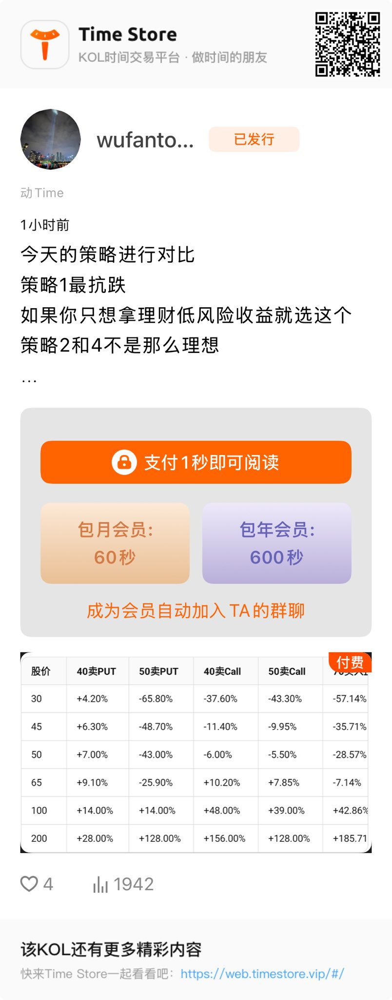

#1 · wufantouzi · 2026-06-26T13:47:43.000Z今天的策略进行对比策略1最抗跌wufantouzi发布了一条动Time，点击查看https://web.tsdaq.com/#/time/pages/timeDetail/index?timeid=157846…https://web.tsdaq.com/#/time/pages/timeDetail/index?timeid=157846…
#5 · wufantouzi · 2026-07-02T16:45:01.000Z没有无缘无故的爱也没有无缘无故的恨有的人骂你也许是他某天看你的帖子自己偷偷跟了一单亏了钱又不好意思说恨是埋下了但是跟你那单是事实存在且亏了钱的有人挺你也许是他某天看你帖子偷偷跟了一单恰好赚了虽然没给你分钱但是记下你的好了所以被骂几乎都不冤枉毕竟不可能是每次都对Show more